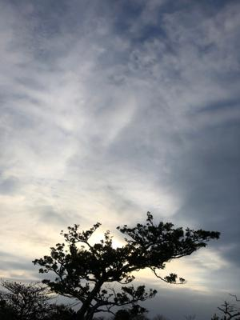
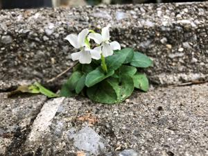

うるがいの話 ある日
最新: 沈黙の日々【うるがいの話 ある日】とは 一日だけのプログです
『うるがいの話』の最新一日だけのプログで、通信料が少なく経済的だ。カニの画像をクリックすると全ての日付が載る『うるがいの話』サイトを表示します
|
|
【うるがいの話】 うるがい(ｳﾙｶﾞｲ urugai)とは、『もずくがに』の名前でとても大きくなります。 |
|---|---|
|
|
【カミマヤーの話】 猫のことを方言でマヤーといいます。カミマヤー（kamimayaa）とは、神の猫のことです。 |
|
【タナガーの話】 たながー（ﾀﾅｶﾞｰtanagaa）とは手長えびのことで、何種類かあり大きいのは車 エビぐらいになります。 |

|
【ぶながぁの話】 ぶながー(bunagaa)とは、赤い髪の毛、赤い身体、そして身長は１ｍ２０ｃｍ ぐらい、川の蟹を食べているの目撃された。場所は沖縄県国頭郡大宜味村のと ある村僕の隣近所に住んでいる爺さんから、聞いた話です。 |
|
|
【ギーマの話】 ギーマ(giima)とは、山原の里山に咲くスズランに似た、 花を付けます。実は食べられます、 気が付くと口の周りが紫になっています。 |
2022年01月08日 (土）沈黙の日々
16:14

おとといから、部活動が無くなったため静かだ。今日も新規感染者は増え続け
ている。友人の職場でも、家族が陽性になり休まないといけなくなったと人が
いると伝えてくれた。た、オヨオヨ。昨日の夜１８時半に副業の募集窓口から
メールが来た。オ、夜になっているゼと一瞬思ったが、そもそも副業なので昼
間仕事をしている人達も対象だから、かと納得する。来週、ＺＯＯＭによりオ
ンラインで説明会を開催するとのこと、そうかそもそも『新型コロナウイルス
感染症をはじめとする感染症に強い地域経済の実現を目的とします』とある。
なるほど、オンラインが主体になるのか、ホウホウとりあえず募集人数百名の
中に含まれたようだ。

家の庭に咲く自生するスミレは白い色で、隣り近所およびその近辺はよくみる
紫である。近頃、庭や畑をいじくりまわしているせいか、スミレを見かけなく
なったと思っていたら、家の門や駐車場に入口にけなげに咲いている。正確に
は、屋敷外なのだが。
１６時０７分 ビットコインの総資産 ￥１４、０４３